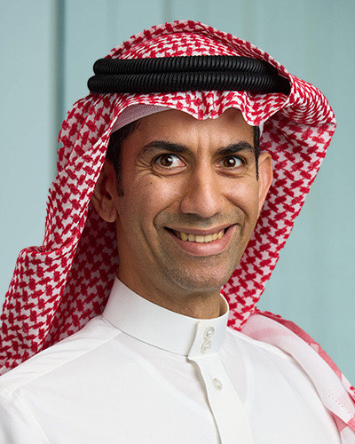
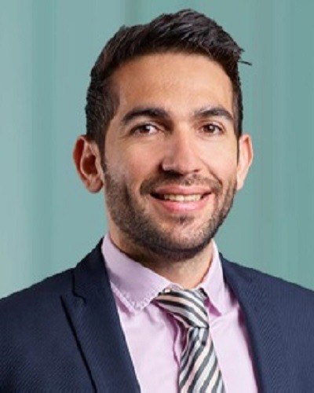
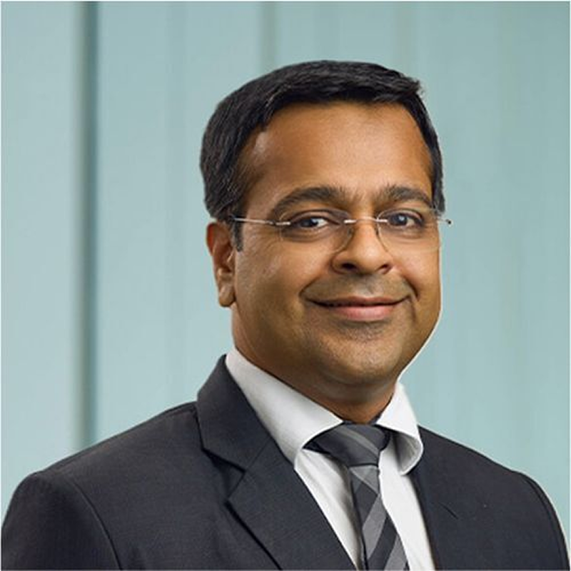
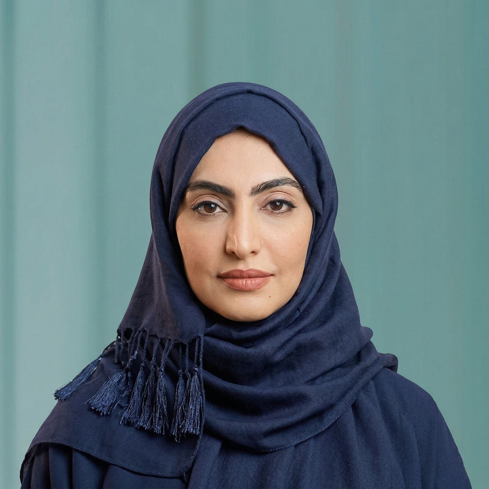
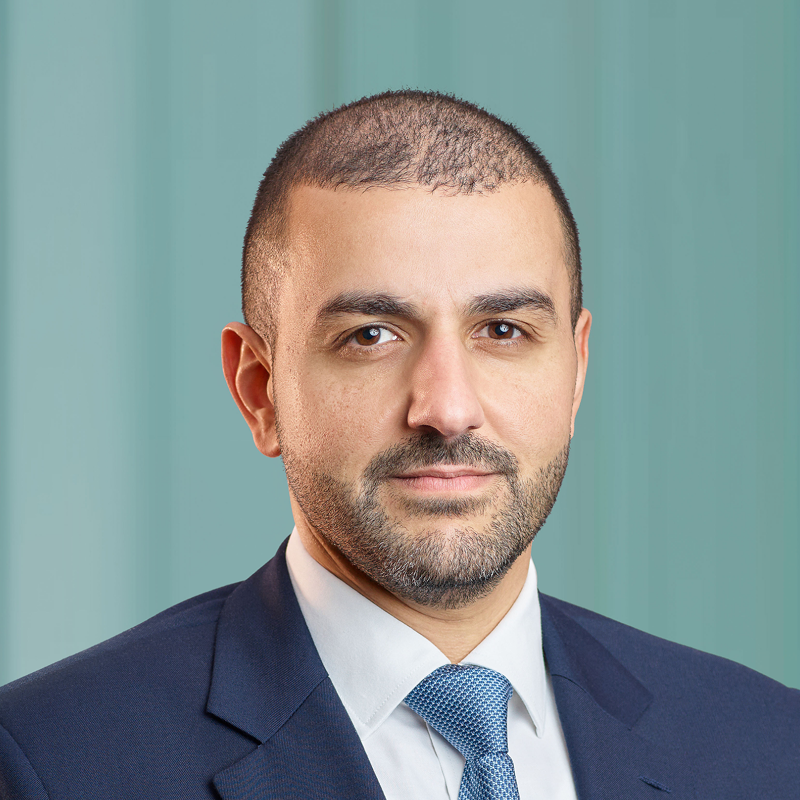
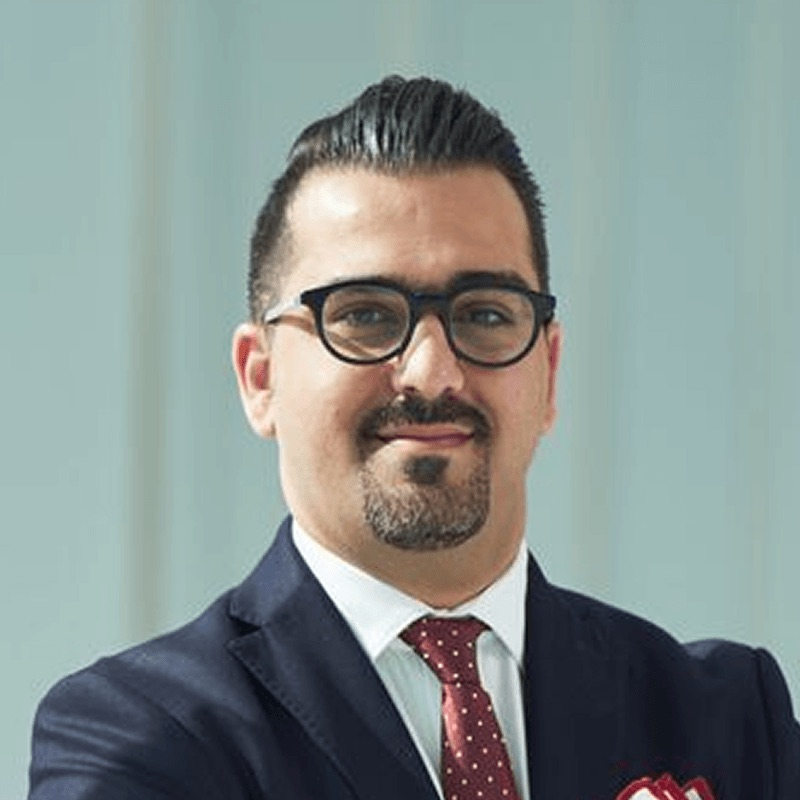
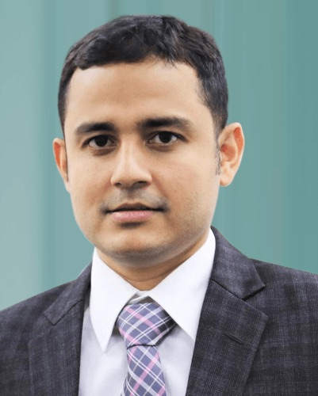
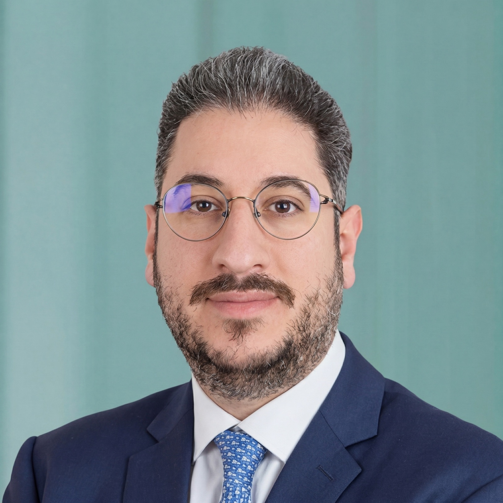

Ali Marshad brings over 19 years of experience in asset management, investments, treasury, and brokerage. He joined SICO in 2008 as an Analyst in the Investments and Treasury Division, later establishing and leading the Fixed Income Desk in 2012 before being promoted to Head of Fixed Income in 2015. He also serves as a Board Member of SICO Capital in Saudi Arabia. Prior to joining SICO, Mr. Marshad gained international experience in the UK as an Analyst with Mercer Investment Consulting and as a Performance Analyst with UBS Global Asset Management in London. A Chartered Financial Analyst (CFA), he holds a Bachelor of Science (Honours) in Banking, Finance, and Management from Loughborough University, UK.
Manuel Almutawa brings around 15 years of industry experience to his new leadership position. A seasoned professional, he has been with SICO as a Senior Portfolio Manager in the Fixed Income department, where he has been instrumental in covering the MENA fixed income market. His responsibilities have included portfolio management, structuring, and trading, leveraging a strong background in multi-asset classes from his previous proprietary desk experience. Mr. Almutawa holds an MSc in Investment Management from the University of Reading, ICMA Centre. He is also a CFA Charterholder and holds the International Fixed Income and Derivatives Certificate, highlighting his commitment to professional excellence and continuous learning.
Nishit brings more than 20 years of diversified investment experience in the fields of investment research, portfolio management, hedge funds and private equity. Joining SICO Sell Side Research in 2009, Nishit has headed the department for 13 years, with an active coverage of more than 90 companies across the GCC. He managed the Sell Side Research's Top-20 model GCC portfolio, which generated consistent alpha each year since inception (Nov 2017-Dec 25). Prior to SICO, he worked for an Iceland-based private equity firm with a focus on the Indian infrastructure sector as well as a US based Hedge fund investing across Global Equities (Long-Short). Nishit is a CFA and CAIA Charterholder and a FRM (GARP USA). He holds an MBA (Finance) from the Narsee Monjee Institute of Management Studies, Mumbai, India.
Fatema is a finance professional with over 24 years of experience in financial management, accounting, and regulatory reporting within the banking and investment sector. She oversees the Finance, Accounting, and Reporting functions across the Group, supporting financial planning, regulatory compliance, and financial reporting, and has led key initiatives including the implementation of SICO's core banking system. Fatema joined SICO in 2001 and holds a Master of Finance (Distinction) from DePaul University, a diploma in IFRS, and a Bachelor's degree in Accounting from the University of Bahrain.
Hussain heads the Proprietary Investments Department at SICO, bringing 19 years of experience in managing proprietary capital within an institutional investment framework. He oversees the proprietary investment book, including strategic asset allocation, portfolio construction, and capital deployment across a diversified multi-asset universe, including equities, fixed income, and alternative investments. His experience spans both GCC and international markets, managing diversified portfolios aligned with long‑term investment objectives and guided by an allocation‑driven investment approach across market cycles.
Ali is an internal audit and risk leader with over 19 years of experience across banking and capital markets in Bahrain, Saudi Arabia, and the UAE. As Deputy Group Chief Internal Audit Officer, he oversees the Group's internal audit function, strengthening governance, risk management, and controls. A Certified Internal Auditor (CIA) and Associate Professional Risk Manager (APRM), he brings strong expertise in regulatory compliance and risk-based auditing, and is known for his integrity and sound judgment.
Chiro Ghosh has 19 years of sell-side research experience, focusing on financial institutions of emerging markets. Prior to joining SICO in 2012, he worked with HSBC in the Financial Institutional Group (Banks, Insurance, and Real Estate) in a similar role. He also spent two years as a financial consultant in the real estate sector. In addition to equity research, Mr. Ghosh has been involved in various Merger and Acquisition deals in the GCC. He holds a bachelor's degree from the prestigious Indian Institute of Technology, before completing his post-graduation in management with a specialization in Finance. He is also a CFA Charter holder.
Hashem brings over 12 years of experience in the financial sector, with expertise in equity asset management, portfolio construction, and market research across regional markets. He was appointed Head of Equities Asset Management at SICO Capital, following nearly eight years with SICO BSC in Bahrain, where he most recently served as Vice President and Portfolio Manager within the Asset Management department. During his tenure, he contributed to the growth and performance of managed equity portfolios and the development of investment strategies. He holds a Master of Science in Finance from DePaul University and a Certificate in Quantitative Finance (CQF), reflecting a strong blend of hands-on investment experience and advanced quantitative expertise.
Ziad has more than 15 years of extensive experience in corporate finance, audit, and deal advisory within the Big Four. Prior to joining SICO Capital, Ziad served as M&A Director at KPMG Professional Services in Saudi Arabia, where he spearheaded multiple successful transactions with a total value exceeding USD 4 billion. Throughout his career, he has been a trusted advisor to C-level executives and board members, managing complex deal lifecycles across diverse industries including healthcare, manufacturing, fintech, and banking. His previous experience also includes serving as an Audit Manager at PwC in Lebanon. Ziad is a Certified Public Accountant (CPA) and holds a Bachelor of Science in Business Administration/Accounting with distinction from the Lebanese American University. He is fluent in Arabic, French, and English.
Hatim brings over 18 years of experience in the investment industry, focusing on equities, fixed income, and money market portfolio management. Prior to joining SICO Capital, he served as Head of the Money Market & Fixed Income Division at Sidra Capital in Riyadh. He has held senior roles with leading investment managers in Saudi Arabia and holds a Master's degree from the Florida Institute of Technology.